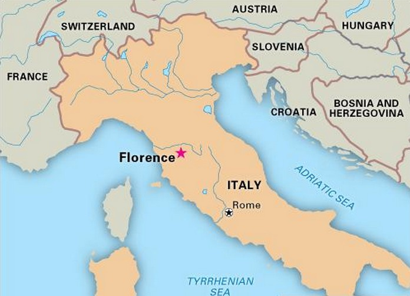

Welcome To Florence!

Florence, the spectacular capital of the region of Tuscany,
is located on Italy's northwest coast. It is a stunning medieval
city divided into two parts by the River Arno that flows from
the Apennines through Florence and Pisa. Florence is considered
one of the most beautiful cities in the world with its overflow of palaces, churches,
and museums filled with masterful paintings and sculptures. What was once
the cradle of the Renaissance, Florence gives its people beauty, history,
and culture. Here are the top 5 places you should visit when planning a trip
to Florence.